What physics is, and why it shows up everywhere // big picture
Physics is the study of how matter and energy behave at every scale — from quarks to galaxies — and it is the foundation underneath engineering, chemistry, and the hardware that runs modern AI. A transistor is quantum mechanics. A battery is thermodynamics and electrochemistry. A GPS satellite is general relativity. A data center is heat transfer, electromagnetism, and information theory glued together by the second law. The same dozen equations keep resurfacing because the universe reuses its own tricks.
The ten subjects below interlock. Classical mechanics and electromagnetism are the nineteenth-century foundations; thermodynamics is the bridge between microscopic and macroscopic; special and general relativity reconcile mechanics with the constant speed of light; quantum mechanics and quantum field theory describe the atomic and subatomic worlds; particle physics and cosmology are what happens when you push those tools to the extremes of small and large; and the frontier is where the current open questions live.
Classical mechanics — Newton's laws, energy, momentum, rotation. The physics of everything you can touch.
Electromagnetism — electric and magnetic fields, Maxwell's equations, light as a wave.
Thermodynamics — heat, work, entropy, and the limits on what engines can do.
Special relativity — space and time mix when you move fast. E = mc² is a corollary.
General relativity — gravity is the curvature of spacetime caused by mass and energy.
Quantum mechanics — probability amplitudes and the wavefunction for atoms and photons.
Quantum field theory — fields everywhere, particles as their excitations.
Particle physics — the Standard Model: quarks, leptons, gauge bosons, and the Higgs.
Cosmology — the history and large-scale structure of the universe.
Frontier — quantum gravity, dark matter, dark energy, and the open puzzles.
You do not need to read these in order. If you know what you want, jump to a card below. If you are starting fresh, classical mechanics is the traditional entry point because everything else either generalizes it or contradicts it in controlled ways. Thermodynamics and electromagnetism are the most immediately useful if you build things with wires and heat sinks. Quantum mechanics is the hardest to learn but the most useful if you want to understand chemistry, semiconductors, or why a laser works.
The ten subjects // pick your entry point
Classical Mechanics
Kinematics, Newton's laws, work and energy, momentum, rotation, and a first look at Lagrangian mechanics. The physics of machines, projectiles, and vehicles.
start hereElectromagnetism
Electric and magnetic fields, Gauss's law, circuits, Faraday's law, Maxwell's equations, and electromagnetic waves. The physics of chips, motors, antennas, and light.
coreThermodynamics
Temperature, heat, entropy, the ideal gas law, Carnot engines, and the Boltzmann distribution. The physics of engines, refrigerators, and why data centers need cooling.
coreSpecial Relativity
Lorentz transformations, time dilation, length contraction, four-vectors, and E = mc². What changes about mechanics when you insist the speed of light is the same in every frame.
coreGeneral Relativity
The equivalence principle, curvature, the Einstein field equations, and the Schwarzschild solution. Gravity as the geometry of spacetime.
advancedQuantum Mechanics
Wavefunctions, the Schrödinger equation, operators, measurement, spin, and entanglement. The physics of atoms, lasers, transistors, and qubits.
coreQuantum Field Theory
Fields everywhere, particles as their quantized excitations, Feynman diagrams, and renormalization. The framework behind the Standard Model.
advancedParticle Physics
Quarks, leptons, gauge bosons, and the Higgs. Symmetries, conservation laws, and what the Large Hadron Collider actually does.
coreCosmology
Friedmann equations, the cosmic microwave background, nucleosynthesis, dark matter, and dark energy. The history of the universe from the first microsecond onward.
coreFrontier
Quantum gravity, the measurement problem, the hierarchy problem, dark sector searches, and what might break the Standard Model next.
speculativeHistory of Physics
From Aristotle's elements and the Islamic Golden Age through the Scientific Revolution to quantum mechanics. Includes correlations with ancient Eastern philosophy and why physics and philosophy are still entangled.
contextBlack Holes
Anatomy, types, Schwarzschild and Kerr metrics, Hawking radiation and the information paradox, gravitational waves, EHT imaging of M87* and Sgr A*, quasars, and what happens at the singularity.
advancedAstrophysics
JWST, Hubble, LIGO, and EHT. The search for Earth-like exoplanets. Nearest star systems. Star types and scales. Named galaxies. Cosmic anomalies. Whether the universe will expand forever or end in heat death, Big Rip, or vacuum decay.
newDark Energy & Quantum Vacuum
Zero-point energy, the Casimir effect, the Big Bang, cosmic inflation seeding structure from quantum fluctuations, dark energy models, Hawking radiation, and the fate of the universe — all as one connected story.
advancedNuclear Physics
Binding energy and the Bethe–Weizsäcker formula. Alpha, beta, gamma decay and the decay law. Fission chain reactions and reactor types. Fusion, the Lawson criterion, ITER, NIF and the private fusion race. The Manhattan Project, bomb designs, and today's 12,600 warheads. Nuclear power in 2026.
newSuggested paths // four goal-driven routes
The ten subjects interlock, but if you have a specific goal in mind, here are the shortest paths through.
"I want to understand how engines and data centers work."
Start with Classical Mechanics for energy and work. Then Thermodynamics for heat, entropy, and Carnot. Finish with Electromagnetism for motors, transformers, and induction.
engineering path"I want quantum to click."
Classical Mechanics for energy and conservation. Electromagnetism for waves. Then Quantum Mechanics, where waves start carrying probability instead of energy.
popular pathWhere physics meets the rest of the site
Math: Calculus
Derivatives are velocities and forces; integrals are work and flux. Every physics formula with a differential in it comes from calculus.
Math: Linear Algebra
Quantum states live in Hilbert space; Lorentz transformations are matrices; stress and inertia are tensors. Linear algebra is the grammar.
Math: Probability
Statistical mechanics is probability over phase space. Quantum mechanics is probability amplitudes. Both rest on the same machinery.
CS: Algorithms
Physics simulations — molecular dynamics, lattice QCD, N-body — are some of the oldest and largest consumers of algorithmic cleverness.
AI: Foundation Models
Training a trillion-parameter model is thermodynamics (heat), electromagnetism (power delivery), and quantum mechanics (the transistors). Physics runs the datacenter.
AI: Diffusion Models
Diffusion models borrow their math directly from non-equilibrium statistical mechanics. Langevin dynamics, Fokker-Planck — physicists saw this movie first.
The physicists who built it all // portraits in ideas
Physics is an unusually personal science — its history is largely the history of a small number of people who saw something no one else did. These are the individuals whose frameworks we still use daily.

Principia Mathematica unified terrestrial and celestial mechanics. Invented calculus and the inverse-square law of gravity. The most consequential single work in the history of science.

Four equations unified electricity, magnetism, and optics; predicted electromagnetic waves at the speed of light 22 years before Hertz confirmed them. Also founded statistical mechanics.
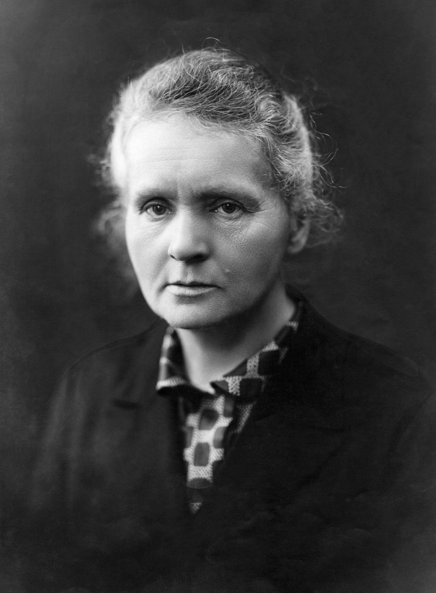
Discovered polonium and radium; coined "radioactivity." The only person to win Nobel Prizes in two sciences: Physics 1903, Chemistry 1911.
⭐ Nobel 1903 & 1911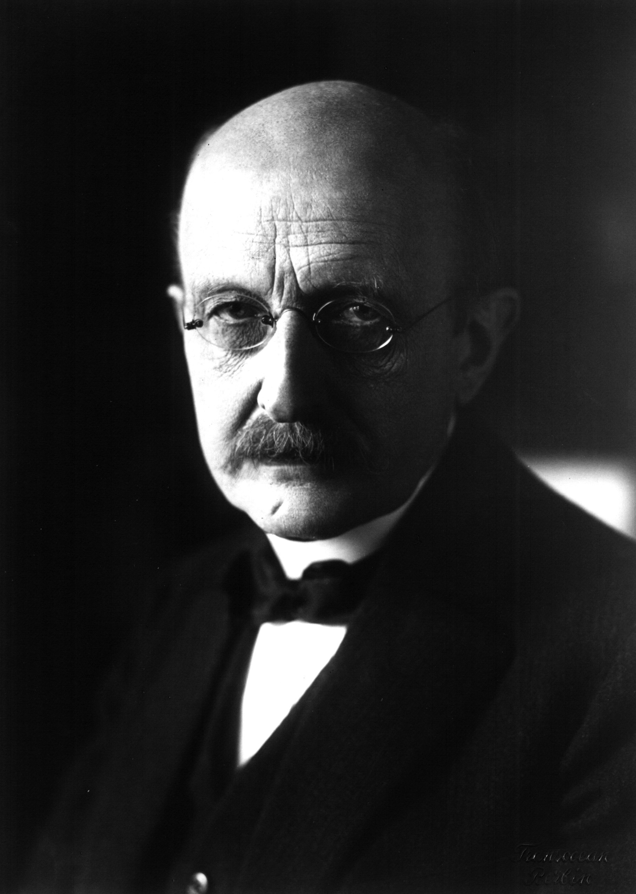
Quantized energy to fix blackbody radiation — called it "an act of desperation." Spent the rest of his career uncomfortable with what he had started. He started quantum mechanics.
⭐ Nobel 1918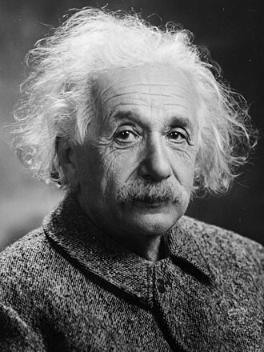
In 1905: special relativity, photoelectric effect, Brownian motion, E=mc². In 1915: gravity as curved spacetime. Also predicted stimulated emission — the mechanism behind the laser.
⭐ Nobel 1921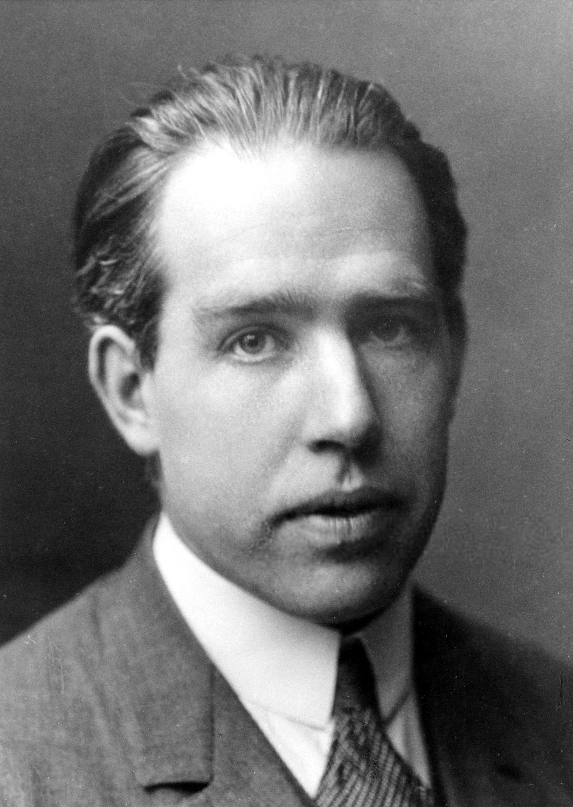
Quantum hydrogen atom model (1913) explained spectral lines. Articulated the Copenhagen interpretation and complementarity. His Copenhagen institute was the discipline's intellectual center for 20 years.
⭐ Nobel 1922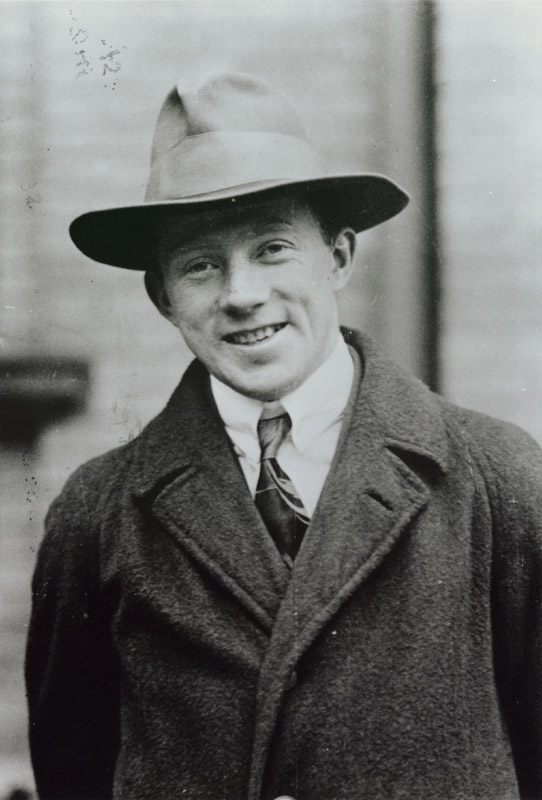
Matrix mechanics (1925) — quantum's first complete mathematical form. Uncertainty principle (1927): ΔxΔp ≥ ℏ/2. His algebraic formulation remains the natural language of modern field theory.
⭐ Nobel 1932
Wave equation (1926) gave quantum mechanics a form physicists could work with. His cat paradox — intended as reductio ad absurdum — became the most famous illustration of the measurement problem.
⭐ Nobel 1933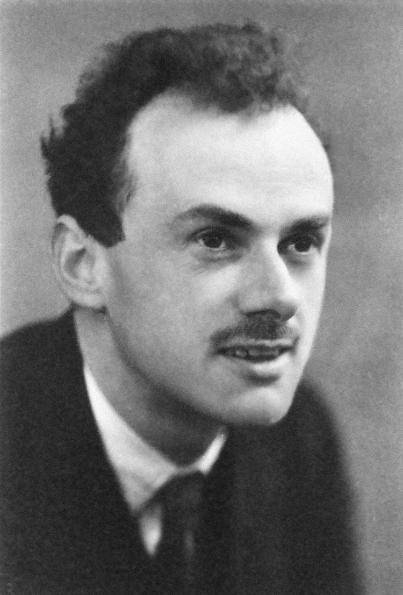
Dirac equation (1928) combined QM and special relativity and predicted antimatter before any antiparticle was observed. His bra-ket notation remains standard. Papers are models of mathematical economy.
⭐ Nobel 1933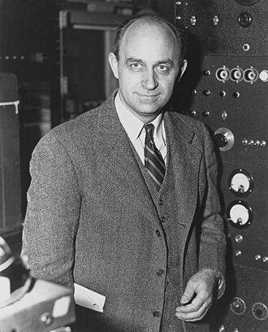
Built the first nuclear reactor (Chicago Pile-1, 1942). Theory of beta decay and the weak interaction. Fermi statistics for half-integer spin particles. Originator of "Fermi estimation."
⭐ Nobel 1938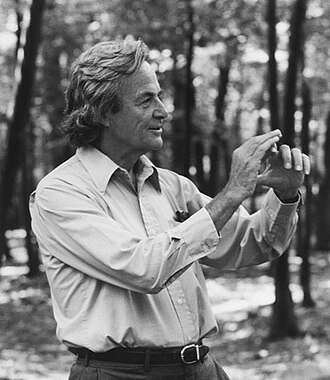
Path integral formulation of QM and Feynman diagrams. Led the Challenger investigation. The Feynman Lectures on Physics remain the best physics introduction written. The most gifted communicator the field has produced.
⭐ Nobel 1965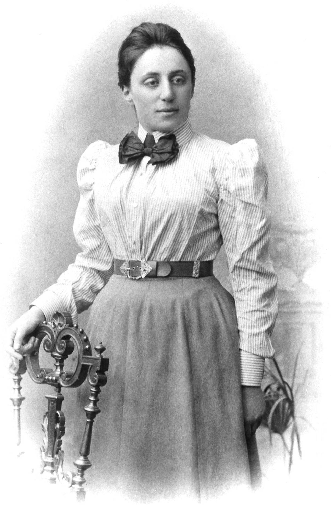
Noether's theorem: every continuous symmetry gives a conserved quantity. Arguably the most important theorem in theoretical physics. Einstein called her the most significant creative mathematical genius he'd encountered. Barred from faculty positions for being a woman.
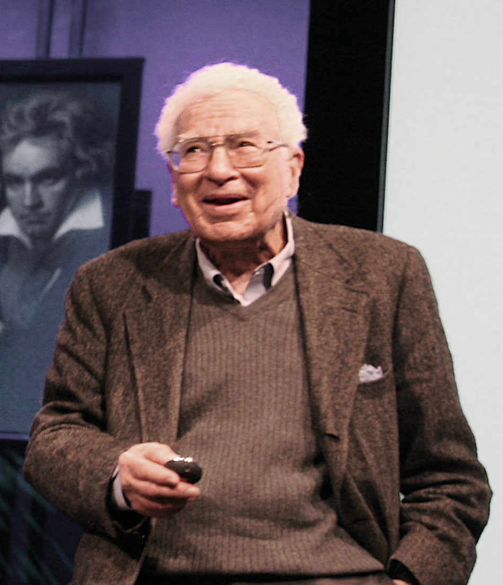
Quark model and the Eightfold Way. Co-developed QCD. Named quarks after Joyce's Finnegans Wake. Brought order to the particle zoo of the 1950s.
⭐ Nobel 1969
Singularity theorems (with Penrose). Hawking radiation: black holes emit thermal radiation, connecting QM, thermodynamics, and gravity. Did his most important work after his ALS diagnosis.
First definitive evidence for dark matter from galaxy rotation curves: outer stars orbit too fast for visible mass to hold them. One of the most important observational discoveries of the century. Never awarded the Nobel Prize.
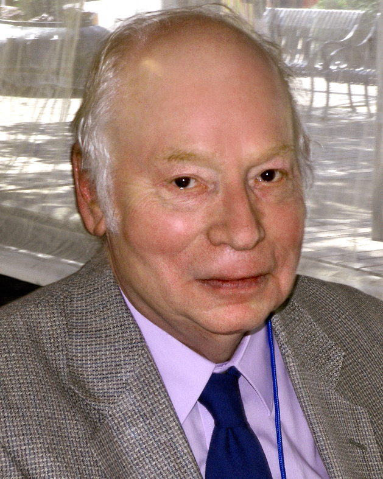
Co-developed electroweak unification: EM and weak forces are one at high energy. Framed the Standard Model as an effective field theory. Also wrote two of the finest physics books for general readers.
⭐ Nobel 1979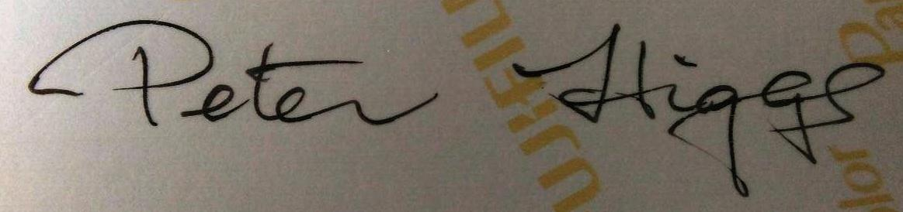
Higgs mechanism (1964): W and Z bosons acquire mass via spontaneous symmetry breaking. Waited 48 years for CERN to confirm the Higgs boson in 2012. Nobel followed in 2013.
⭐ Nobel 2013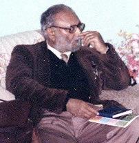
Independently co-developed electroweak theory. First Pakistani and Muslim Nobel laureate in science. Founded the Abdus Salam ICTP in Trieste to build scientific capacity in developing nations.
⭐ Nobel 1979